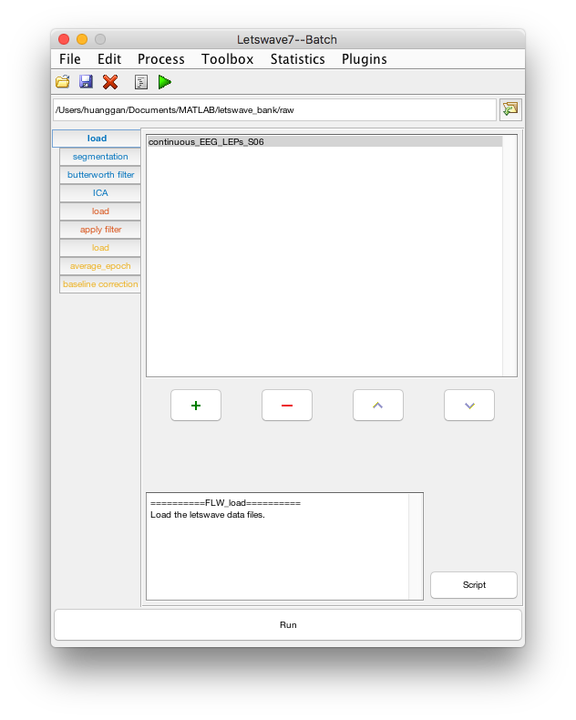
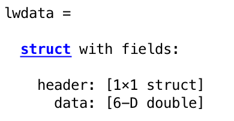

LW_batch is the interface for data processing.
The Letswave batch module is the kep important part in letswave for data processing. It can be launched by typing ‘LW_batch’ in the Matlab command prompt, or called from LW_manager.

file manage
- The Datasets listbox lists all the datasets found in the current folder, sorted by alphabetical order. Basic information of the first dataset you selected are shown below in listbox.
- The names of datasets are normally consisted by multiple affixes. Using the “include” and “exclude” listbox to magage the display of the datasets.
- The toolbar is for folder management. Press the refresh button to refresh the dataset in the current folder. To change the current folder, press the browse for folder button
 or type the address directly in the address bar. Matlab’s current folder will also be changed.
or type the address directly in the address bar. Matlab’s current folder will also be changed.
dataset operation
- To view dataset(s), you can either double-click the dataset(s) in the datasets listbox, click the View datasets button, or select a custom viewer interface in the View menu.
- To apply a function to a given dataset, simply select one or more dataset(s) from that listbox, and choose the function using the dropdown title menus.
- If you wish to modify manually a dataset using your own Matlab code, you can send the dataset to the Matlab workspace by right click the dataset and select “send to workspace”. This will create a new variable in the Matlab workspace, named
lwdata. The workspace variable can be imported back into Letswave using the “Read from workspace”. This will replace the content of the selected dataset with the data contained in thelwdataworkspace variable.
